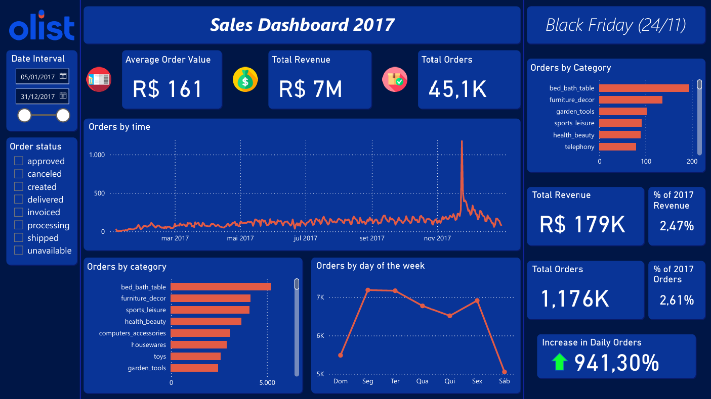

📁 Projects
A selection of projects that demonstrate my experience with data extraction, transformation, and visualization — especially focused on logistics, public data, and data-driven decision making.

Identification of Freight Forwarders Using Receita Federal do Brasil Data
Project that extracts public data from Receita Federal do Brasil (Federal Revenue Service), performs data cleaning and transformation, and identifies potential freight forwarders for logistics analysis.

Sales and Customer Analysis with Olist Dataset (Power BI)
Interactive Power BI dashboard built using the Olist e-commerce dataset. It explores sales trends, customer behavior, payment methods, shipping performance, and highlights business opportunities through data visualization and SQL-powered insights.
P3
P3 desc.